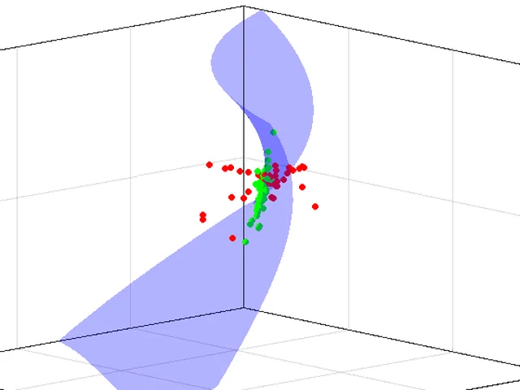
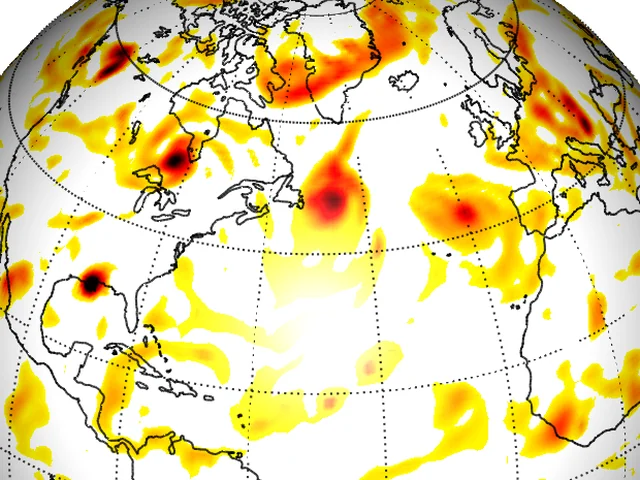
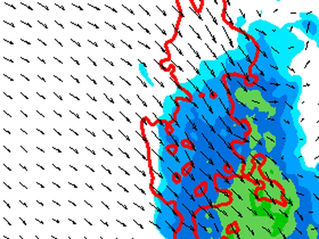
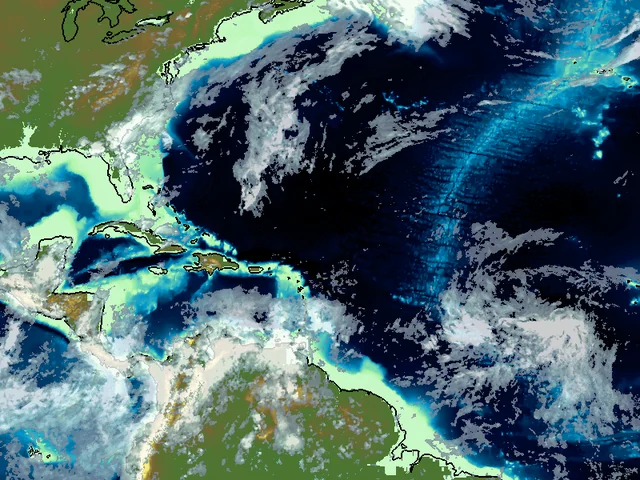
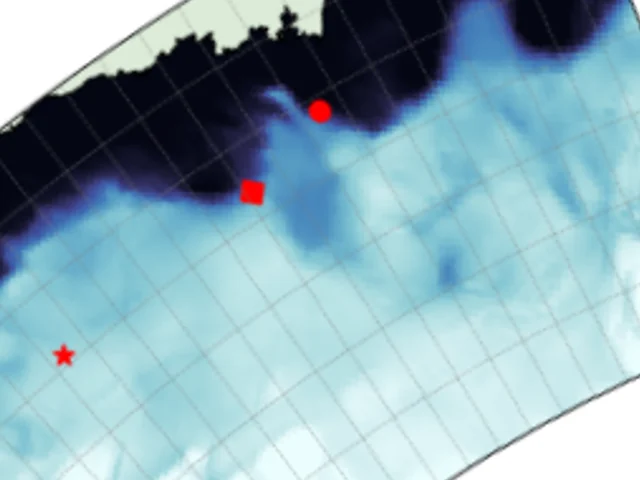

.jpg){kind=link}
Data assimilation for Earth system prediction
Our group develops Bayesian methods that combine models with observations to predict everything from thunderstorms and hurricanes to Arctic sea ice.
Who we are
We are a research group in the Department of Atmospheric and Oceanic Science at the University of Maryland, College Park. We connect new mathematical developments in data assimilation with large-scale Earth system applications.
Our work focuses on:
- Data Assimilation Theory: Developing non-Gaussian ensemble filters and machine learning for state and parameter estimation.
- Earth System Applications: Improving our understanding of multi-scale predictability for global and mesoscale weather, hurricane rapid intensification, and sea ice dynamics.
- Research to Operations: Leading multi-institution efforts to transition theoretical advancements into national modeling systems, working directly alongside scientists at NOAA, NASA, and NSF NCAR.
- Education & Mentorship: Training future scientists through specialized summer schools and leading UMD's role in a multi-university data assimilation consortium.
Current research themes
More about our research →
New data assimilation methodology
The local particle filter, learned likelihood functions, and estimates of observation uncertainty.

Particle filters for global prediction
Testing the local particle filter in NOAA's global forecast system and bringing it into JEDI.

Mesoscale weather prediction
Particle filters for thunderstorms, radar assimilation, and mesoscale ensembles and observing networks.

Hurricanes and high-impact weather
Cycling data assimilation, radiance bias correction, and particle filters for NOAA's hurricane models.

Sea ice and polar prediction
Learned likelihoods and particle filters for sea ice, PREFIRE radiances, and ice sheet observing experiments.
Recent publications
All 32 articles →- Cheung*, A., D. P. Stern, P. M. Finocchio, and J. Poterjoy, 2026: Using IMERG to Understand the Relationship Between Precipitation Structure and Intensification in Tropical Cyclones. Mon. Wea. Rev., 154, 2151–2172. DOI ↗
- Wang, X., P. J. van Leeuwen, J. Poterjoy, and 19 coauthors, 2026: The Multi-University Consortium for Advanced Data Assimilation Research and Education (CADRE). Bull. Amer. Meteor. Soc., 107, E2048–E2064. DOI ↗
- Santer*, H., J. Poterjoy, and M. El Gharamti, 2025: Innovation-Based Methods for Online Estimates of Observation Error Variances Within Ensemble Data Assimilation Cycles. Mon. Wea. Rev., 153, 1781–1792. DOI ↗
- Choi, Y., A. Petty, D. Felikson, and J. Poterjoy, 2025: Estimation of the State and Parameters in Ice Sheet Model Using an Ensemble Kalman Filter and Observing System Simulation Experiments. The Cryosphere, 19, 5423–5444. DOI ↗
- Kurosawa*, K., and J. Poterjoy, 2025: Augmented Flow-Dependent Perturbations to Mitigate Sampling Errors: Experiments for a Regional Application of the NOAA Unified Forecast System. Wea. Forecasting, 40, 1147–1161. DOI ↗
* Graduate student or postdoctoral advisee